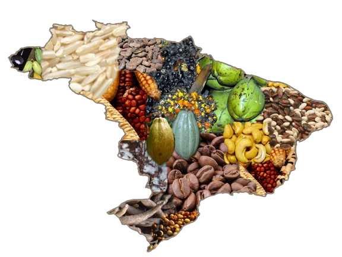

Um mosaico de diversidade regional
 O Brasil é uma potência agrícola reconhecida mundialmente, e sua produção agrícola é tão vasta quanto a diversidade de seu território. Com peculiaridades climáticas e de solo que se estendem por suas cinco regiões, o país se destaca pela sua capacidade de cultivar uma ampla variedade de culturas. Cada região contribui de forma única para a riqueza e o dinamismo do agronegócio brasileiro. Neste projeto, exploraremos a diversidade da produção agrícola brasileira por região, destacando as culturas predominantes e as peculiaridades de cada estado.
Como características do agronegócio, podemos citar as médias e grandes propriedades rurais que conseguem alta produtividade em seus respectivos ramos de produção, tanto na agricultura quanto na pecuária. Na agricultura, é frequente a prática da monocultura, ou seja, a produção de um tipo de plantio apenas. Em muitos casos, há propriedades que praticam as duas modalidades, criando gado e plantando algum tipo de vegetal.
As médias e grandes propriedades rurais desempenham um papel importante para outra característica do agronegócio: a modernização do campo. Esta é resultado de intensas transformações científicas e tecnológicas a partir da década de 1950, com maior intensidade na década de 1970, com o surgimento dos Organismos Geneticamente Modificados (OGM), por exemplo.
Essa modernização engloba máquinas, sementes modificadas, técnicas de cultivo e criação de animais avançadas e desenvolvimento de produtos que aceleram o ciclo natural de plantio e crescimento de plantas e gados. Existem laboratórios especializados em aprimorar espécies de animais ou para cultivos, a fim de melhorar e aumentar a produção.